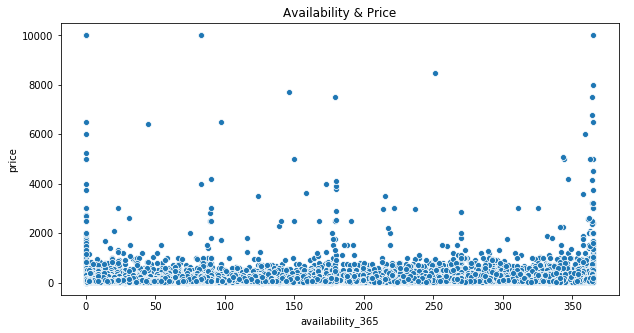
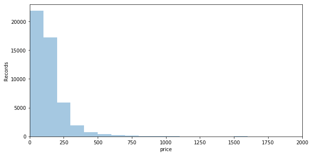
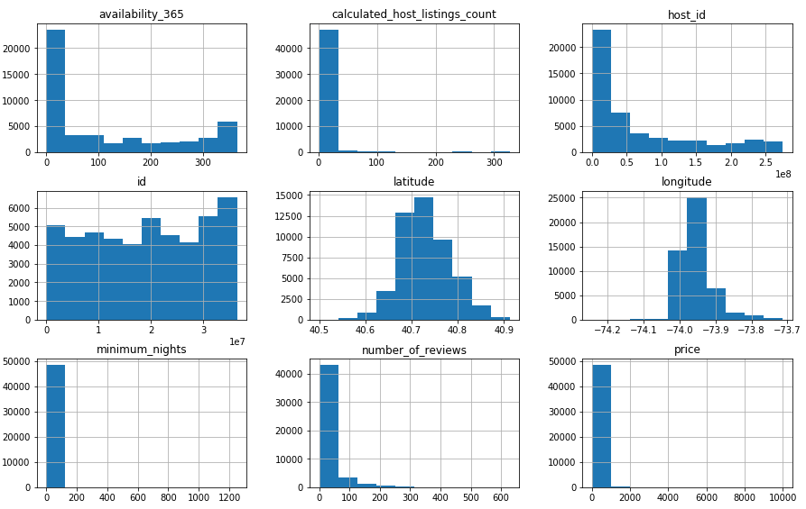
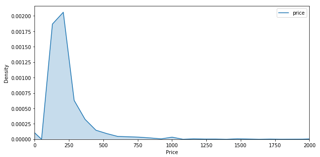

Continuous Variable Plots with Seaborn & Matplotlib
Import Visualisation Libraries
import matplotlib.pyplot as plt
import seaborn as sns
%matplotlib inline
Scatter Plot
Scatterplot showing price in relation to availability using Seaborn and Matplotlib:
plt.figure(figsize=(10,5))
plt.title('Availability & Price')
plt.xlabel('Availability')
plt.ylabel(
'Price')
sns.scatterplot(data['availability_365'],data['price'])
plt.show()

Histogram
Histogram of the column price group into 100 bins using Seaborn DistPlot with the X axis set to a range of 0 - 2000:
plt.figure(figsize=(10,5))
plt.xlim(0,2000)
plt.xlabel('Price')
plt.ylabel('Records')
sns.distplot(data['price'],bins=100,kde=False)
plt.show()

DataFrame Histogram
Histograms for all numerical columns in the data DataFrame using Pandas Hist:
data.hist(figsize=(15,30),layout=(9,3))

Density Plot
Density plot for the price variable using Seaborn kdeplot:
plt.figure(figsize=(10,5))
plt.xlim(0,2000)
plt.xlabel('Price')
plt.ylabel('Density')
sns.kdeplot(data['price'],shade=True)
plt.show()

Box Plot
Box plot for the price variable using Seaborn and Matplotlib:
plt.figure(figsize=(10,5))
plt.xlim(0,1000)
plt.ylabel('Price')
sns.boxplot(x=data['price'])
plt.show()

.png)